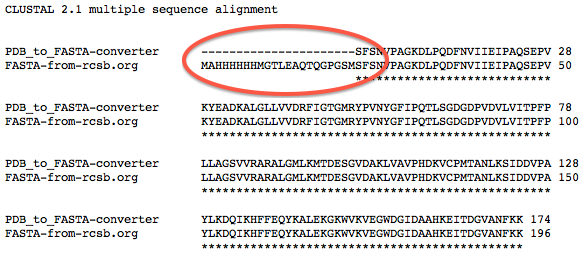
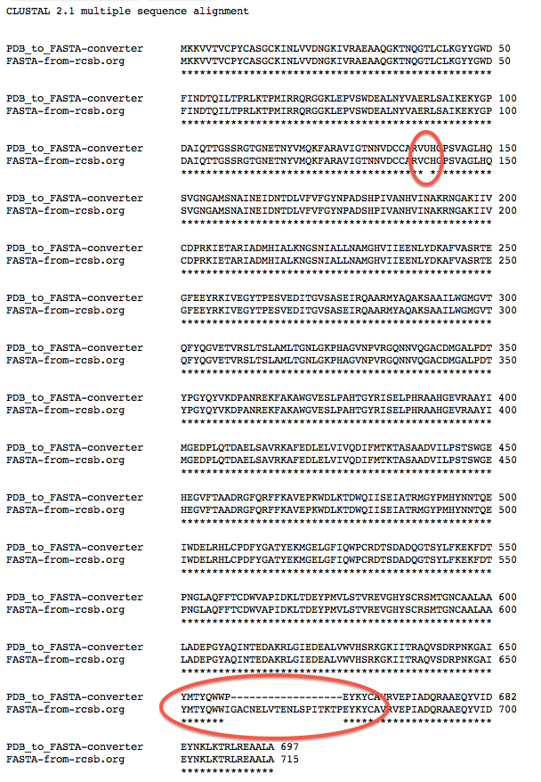
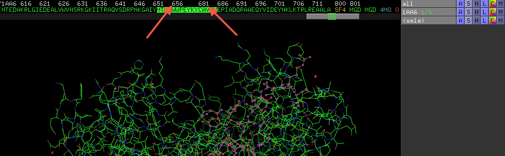

Misleading FASTA sequences in the Protein Data Bank
-- written by Sebastian Raschka on February 23, 2013
TweetThe Protein Data Bank (rcsb.org) deposited amino acid sequences in FASTA format for each PDB structure file. However, those FASTA sequences are not necessarily identical to the amino acid sequences in the corresponding PDB files. Oftentimes, the amino acid sequences from the PDB files are missing a few residues at the n-terminus; sometimes deletions can also be found somewhere within the protein. Using the wrong sequence could lead to inaccurate results in BLAST searches and erroneous protein structure models.
Take the crystal structure of inorganic pyrophosphatase 3EIY for example. The 1-letter amino acid sequence in FASTA format, which is deposited on rcsb.org, looks like this:
MAHHHHHHMGTLEAQTQGPGSMSFSNVPAGKDLPQDFNVIIEIPAQSEPVKYEADKALG
LLVVDRFIGTGMRYPVNYGFIPQTLSGDGDPVDVLVITPFPLLAGSVVRARALGMLKMT
DESGVDAKLVAVPHDKVCPMTANLKSIDDVPAYLKDQIKHFFEQYKALEKGKWVKVEGW
DGIDAAHKEITDGVANFKK
Now, compare it to the amino acid sequence that is actually contained in the PDB structure that corresponds to the same PDB ID:
SFSNVPAGKDLPQDFNVIIEIPAQSEPVKYEADKALGLLVVDRFIGTGMRYPVNYGFIP
QTLSGDGDPVDVLVITPFPLLAGSVVRARALGMLKMTDESGVDAKLVAVPHDKVCPMTA
NLKSIDDVPAYLKDQIKHFFEQYKALEKGKWVKVEGWDGIDAAHKEITDGVANFKK
You may notice some significant differences between the two sequences as they are shown in the figure below:
(EMBL-EBI ClustalW2 http://www.ebi.ac.uk/Tools/msa/clustalw2/)
Obviously, the first 22 amino acid sequences are missing in the PDB file. However, this is not unusual and may be due to the procedure of X-ray crystallography and structure assignment. But it is one of the details that you have to have in mind when you are planning to work with the amino acid sequence.
Unfortunately, differences can also occur right in the middle of the amino acid sequence and could go easily unnoticed. Take a look at the following example (formate dehydrogenase, PDB ID: 1AA6).
At residue 140 the FASTA code on rcsb.org has a C (cysteine), however, in the crystal structure it is an U (seleno-cysteine). And yet another dissimilarity is much more severe: At position 668 there is an entire stretch of 18 amino acid residues missing in the crystal structure! When you open the PDB structure in a molecular visualization tool, e.g., PyMOL, you can see a sudden skip in the numbering, which can be easily overlooked!
Such a insertion/deletion of residues can cause a significant bias to further sequence analyses (e.g., BLAST searches) or modeling approaches. Thus, you should make sure to always compare the 1-letter amino acid sequences of the FASTA file and the corresponding protein structure file.
The PDB structure file can be converted into FASTA format using the tool PDB to FASTA (http://sebastianraschka.com/Webapps/pdb_to_fasta.html), and for the comparison you can use your favorite sequence alignment tool, e.g., ClustalW2 (http://www.ebi.ac.uk/Tools/msa/clustalw2/ ).